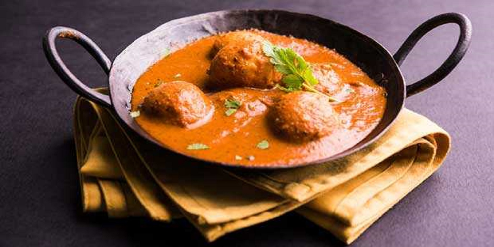
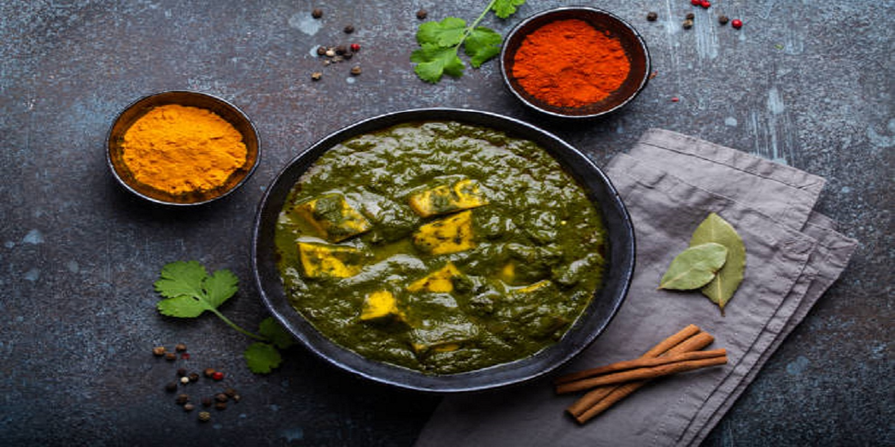
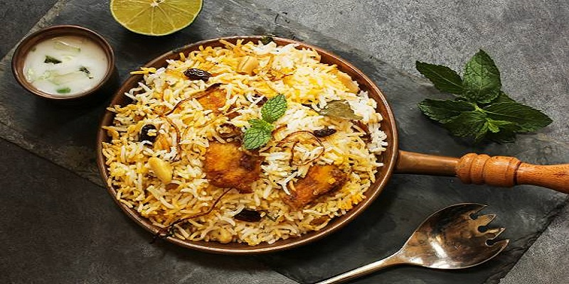
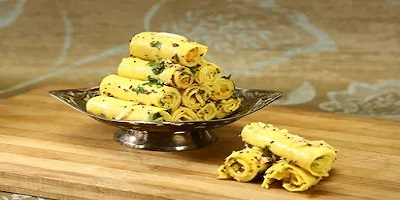
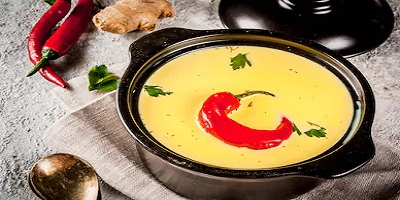
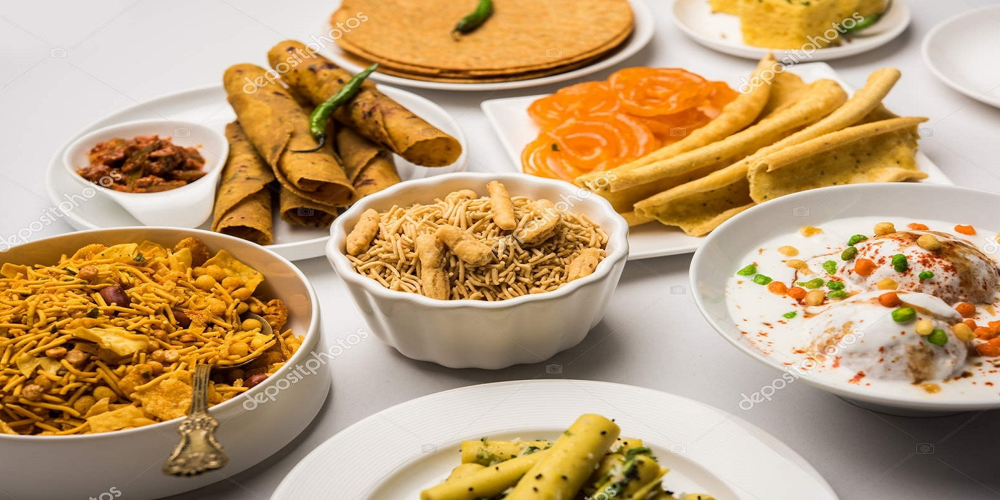
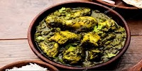
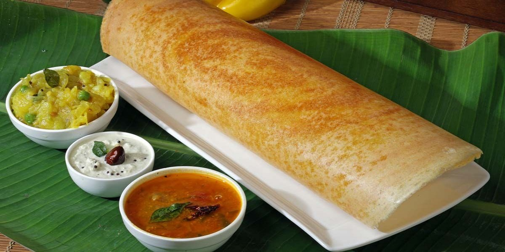
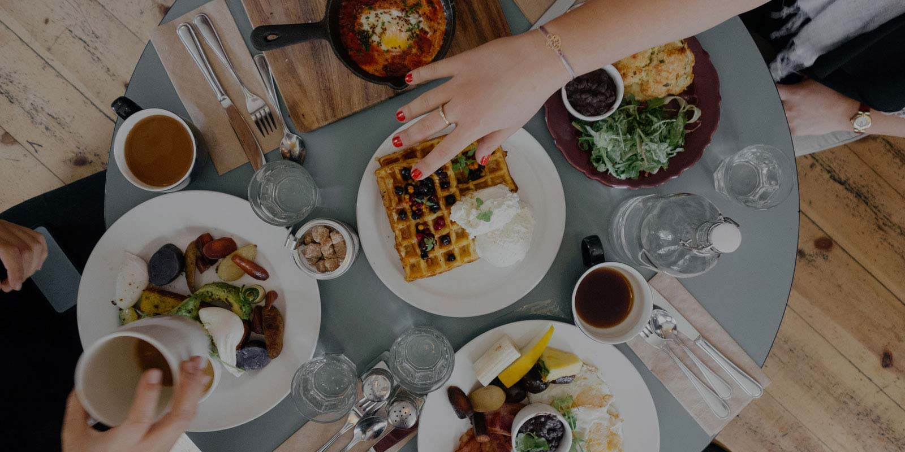
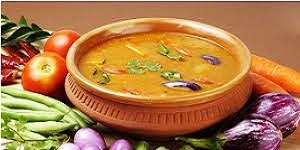

Venture to the north, and you will find that roast meat dishes, cooked in the tandoor oven to be a common item consumed in daily meals. North Indians also consume rice dishes, such as the biryani, and flatbreads, like the chapati and poori. The flatbreads are usually eaten with thick, mild curries.

RegularAvailabile
Dum Aloo
Dum Aloo is a potato curry which is made using baby potatoes.”Dum” refers to dum cooking in Indian cuisine where dishes are cooked on low heat by sealing the pot. For example this vegetable biryani uses the same method. Dum cooking enhances the flavor of the dish.
It made up with baby potatoes, yogurt, spices, cashews & cream, cilantro & kasuri methi. We are making this dish with mustard oil, freshly ground spices and finish with cream and sugar. We serve it with either of jeera rice and naan or with any bread of choice.
$30
NewAvailabile
Dal Makhani
This Dal Makhani recipe is a restaurant style version with subtle smoky flavors and creaminess of the lentils. If you love authentic Punjabi food then you are going to love this Dal Makhani even more.
Dal Makhani is one of the most popular lentil recipes from the North Indian Punjabi cuisine made with Whole Black Lentils (known as Urad dal or Kaali Dal in Hindi) and Kidney Beans (known as Rajma in Hindi).
$70
$100

SpecialAvailabile
Palak Paneer
Palak Paneer is a popular Indian dish of Indian cottage cheese cubes in a mild, spiced smooth spinach sauce. This delicious creamy dish is made with fresh spinach leaves, paneer (firm cottage cheese), onions, tomatoes, herbs and spices.
Paneer contains high quality protein and calcium which aids in weight loss. Since paneer is low in carbs and high in protein it gets digested slowly and hence good for diabetes.
$50

RegularUnavailable
Biryani
Biryani is a rice dish made with layers of rice, spices and traditionally meat (but it our case veggies!). Nothing like a good plate of aromatic biryani! This Vegetable Biryani hits all the right spots with its wonderful aroma and exotic flavors!
Loaded with veggies, crunchy cashews, warm spices like saffron, herbs like cilantro and mint, this biryani is a delight to the taste buds in every bite!
$20
Gujarati Dishes
Gujarati cuisine is one of the the oldest culinary treasures of India and is primarily vegetarian. Gujarati dises are sweet as native Gujarati people. We have dises which are very popular in various parts of Gujarat which gives you unique touch to Gujarati cuisine.

NewAvailabile
Khandvi
Khandvi, also known as Patuli, Dahivadi or Suralichi Vadi, is a savory snack in Maharashtrian cuisine as well as in Gujarati cuisine of India. It consists of yellowish, tightly rolled bite-sized pieces and is primarily made of gram flour and yogurt.
Here we made Khandvi with a mixture of gram flour and buttermilk. Cooking this smooth batter of the gram flour and buttermilk batter is one tricky part.
$70
$100

RegularUnavailable
Gujarati Kadhi
Kadhi is a traditional Gujarati preparation of a wonderful sweet and spicy curd mixture thickened with besan (gram flour), which can be enhanced in many ways using other ingredients like pakoras and koftas.
Enjoy the Gujarati kadhi with hot bowl of khichdi. Our collection of Gujarati Dal and Kadhi has many varieties of kadhi recipes like the Bhatia Kadhi, Gujarati Suva Kadhi and Radish Koftas in Kadhi which can be relished with Gujarati Khichdis.
$20

RegularAvailabile
Thepla
Thepla are light as well as healthy. A good snack for children who don’t like greens, especially fenugreek. This way you can incorporate some greens in their diet. along with fenugreek you can also add some other greens like spinach or amaranth in the dough.
Thepla burns the excess calories and helps you in staying energized. Good for skin, eyes, and hair –the nutrients and vitamins present in Thepla help to promote glowing and healthy skin.
$30

SpecialAvailabile
Undhiyu
Undhiyu is a one pot vegetable casserole dish that is the hallmark of Gujarati vegetarian cuisine. Generally preparing undhiyu takes a lot of time and needs patience. Traditionally the veggies are cooked or fried in batches.
This delicious recipe of surti undhiyu does not take much time, as all the veggies along with the Methi muthia are steamed in a pressure cooker. Though, if you want you can also cook the veggies in a large pot or pan. Thus the recipe is easy as well as healthy.
$50
South Indian Dishes
The South Indian food is a brilliant blend of flavors, colors, seasoning, nutritional balance, fragrance, taste, and visual appeal. We have dosas, idlis, vadas and uttapams. Some of them are currently Unavailable and also we are introducing some special dises.

SpecialAvailabile
Masala Dosa
Masala dosa is crispy rice & lentil crepes that are stuffed with a spiced and savory potato filling. Masala dosa is crispy rice & lentil crepes that are stuffed with a spiced and savory potato filling.
It is made by soaking and grinding lentils and rice batter. This ground batter is then fermented overnight to give the dosa its characteristic soft and crispy texture.
$40
NewAvailabile
Rasam Rice
Rasam rice is a nutritious south indian one pot meal recipe which is made from combining rice and rasam together. It is also known as rasam sadham in south indian homes.
This is very amazing in taste and it contains a lot of health benefiting nutrients. Rasam rice is a perfect remedy for cold and cough.
$30
$50

RegularUnavailable
Medu Vada
Most South Indians consider breakfast incomplete without Medu Vada. Whether they have Idli, dosa, pongal or upma, they like to add a crispy, tasty and protein-rich urad dal vada to the platter.
In fact, when you have breakfast in a South Indian restaurant, even in the remote villages, you will be fascinated to see the waiter reel out the list of breakfast combos, almost all of them featuring vada! We serving them fresh with Sambhar and coconut chutney however is doubly delightful.
$25

RegularAvailabile
Buttermilk Sambar
Buttermilk sambar or Yogurt sambar is the traditional sambar gets a makeover where lentils and buttermilk combine. This is a sambar variety made with yogurt and ground coconut masala paste. Unlike the regular sambar variety, it does not use tamarind for sourness.
Buttermilk/yogurt is extensively used in the Indian cuisine. It is one of the ways in which we hydrate ourselves during summer.